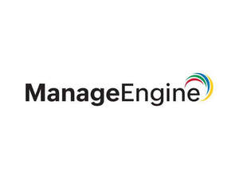

Trade Mark Journal No.2025/042 17 October 2025
UK00004244550 5 August 2025 (9,42)

The mark consists of the brand name 'ManageEngine' written in black, with the word 'Manage' in bold, and 'Engine' in normal. This name is accompanied by 4 coloured swirls at the end of the text. The coloured swirls are Red, Green, Blue and Yellow placed from inwards to outwards.
- Class 9
- Downloadable software for administration of computer local area networks; Downloadable software for computer system and application development, deployment and management; Downloadable software platforms for bandwidth management, wireless network management, firewall log analysis, event log analysis, on premise server administration management, network configuration management, voice over IP monitoring, computer storage management, remote network management; Downloadable software for administration, monitoring, and management of information technology, information technology infrastructure, computer networks, computer systems, computer devices, computer servers, software applications, information technology security systems, information technology help desk and technology support services, data, websites, and software; Downloadable software for accessing, modifying, and controlling information technology (IT), information technology (IT) infrastructure, computer networks, computer systems, computer devices, computer servers, software applications, information technology (IT) security systems, information technology (IT) help desk and technology support services, data, websites, and software; Downloadable software for remotely accessing, modifying, and controlling information technology (IT), information technology (IT) infrastructure, computer networks, computer systems, computer devices, computer servers, software applications, information technology (IT) security systems, information technology (IT) help desk and technology support services, data, websites, and software; Downloadable software for providing information technology (IT) help desk and technology support services; Downloadable software for managing and automating the information technology (IT) services of others; Downloadable software for administration, monitoring, management and security of end point devices, computers, laptops, smart phones, tablets; Downloadable software for the deep analysis and management of, and for responding to, incidents and events happening in the information technology (IT) infrastructure of others; Downloadable software for data backup, recovery, restoration, and synchronization; Downloadable software for the automation of administration, monitoring, and management of information technology (IT), information technology (IT) infrastructure, computer networks, computer systems, computer devices, security systems, computer servers, software applications, data, websites, and software; Downloadable software for the administration, monitoring, management, assessment and quantification of computer security and data breach vulnerability risks; Downloadable software for the remote deployment of software for others; Downloadable software for governing, managing and monitoring access to privileged information; Downloadable software for managing the public key cryptography infrastructure of others and the complete life cycle of encryption keys in the form of SSH keys, SSL certificates and tokens; Downloadable software for performing analytics of data from the information technology infrastructure and applications of others; Downloadable software for managing and securing browsers across networks; Downloadable software for IT asset monitoring, management, auditing, and reporting for regulatory compliance purposes; Downloadable software for operating system imaging and deployment; Downloadable software for data loss prevention; Downloadable software for data leak prevention; downloadable computer software for IT data analytics.
- Class 42
- Providing on-line non-downloadable software for administration of computer local area networks; providing on-line non-downloadable software for computer system and application development, deployment and management; providing on-line non downloadable software for bandwidth management, wireless network management, firewall log analysis, event log analysis, on premise server administration , network configuration management, voice over IP monitoring, computer storage management, remote network management; Providing on-line non-downloadable software for administration, monitoring, and management of information technology, information technology infrastructure, computer networks, computer systems, computer devices, computer servers, software applications, information technology security systems, information technology help desk and technology support services, data, websites, and software; Providing on-line non downloadable software for accessing, modifying, and controlling information technology (IT), information technology (IT) infrastructure, computer networks, computer systems, computer devices, computer servers, software applications, information technology (IT) security systems, information technology (IT) help desk and technology support services, data, websites, and software; Providing on-line non downloadable software for remotely accessing, modifying, and controlling information technology (IT), information technology (IT) infrastructure, computer networks, computer systems, computer devices, computer servers, software applications, information technology (IT) security systems, information technology (IT) help desk and technology support services, data, websites, and software; Providing on-line non-downloadable software for providing information technology (IT) help desk and technology support services; Providing on-line nondownloadable software for managing and automating the information technology (IT) services of others; Providing on-line non-downloadable software for administration, monitoring, management and security of end point devices, computers, laptops, smart phones, tablets; Providing on-line nondownloadable software for the deep analysis and management of, and for responding to, incidents and events happening in the information technology (IT) infrastructure of others; Providing on-line non-downloadable software for data backup, recovery, restoration, and synchronization; Providing on-line nondownloadable software for the automation of administration, monitoring, and management of information technology (IT), information technology (IT) infrastructure, computer networks, computer systems, computer devices, security systems, computer servers, software applications, data, websites, and software; Providing on-line nondownloadable software for the administration, monitoring, management, assessment and quantification of computer security and data breach vulnerability risks; Providing on-line nondownloadable software for the remote deployment of software for others; Providing on-line non-downloadable software for governing, managing and monitoring access to privileged information; Providing on-line non-downloadable software for managing the public key cryptography infrastructure of others and the complete life cycle of encryption keys in the form of SSH keys, SSL certificates and tokens; Providing on-line nondownloadable software for performing analytics of data from the information technology infrastructure and applications of others; Providing on-line non-downloadable software for managing and securing browsers across networks; Providing online non-downloadable software for IT asset monitoring, management, auditing, and reporting for regulatory compliance purposes; Providing on-line nondownloadable software for operating system imaging and deployment; Providing on-line non-downloadable software for data loss prevention; Providing on-line non-downloadable software for data leak prevention; Providing on-line non-downloadable software for IT data analytics.
Zoho Corporation Limited
Zoho Corporation Private Limited